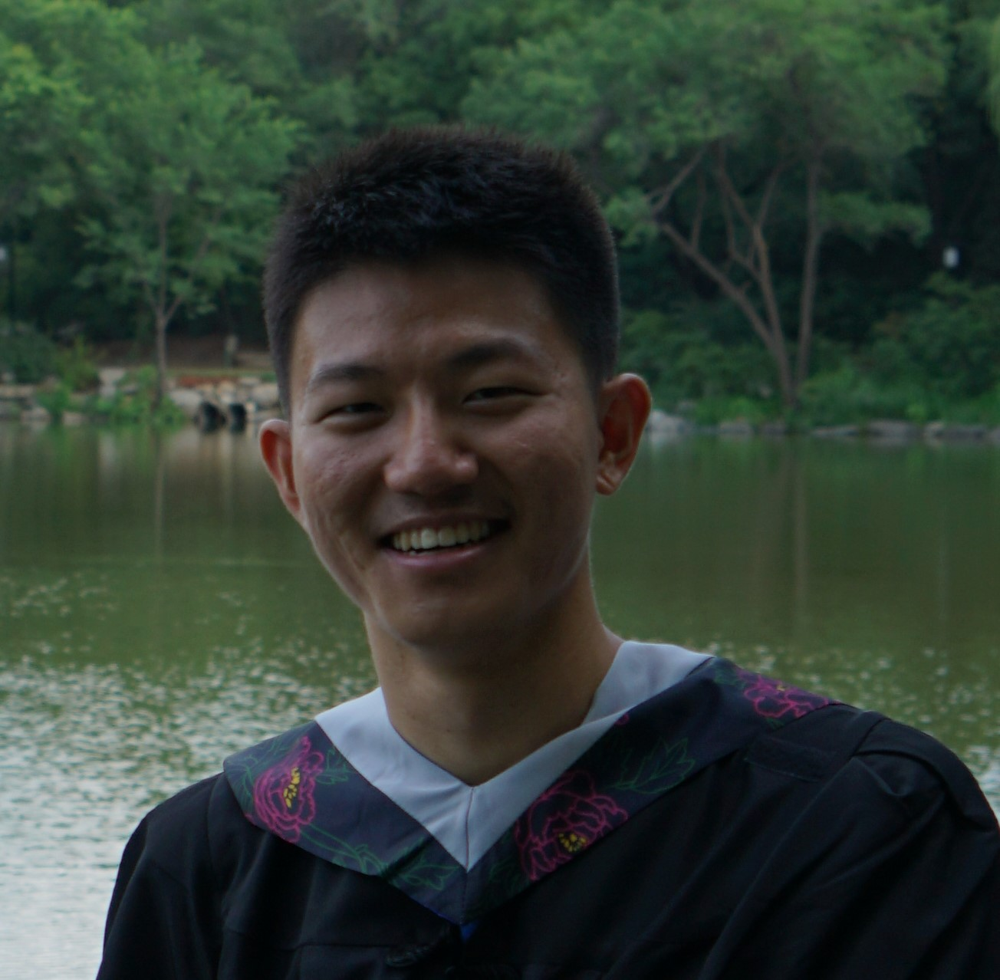

Zijun Li
Postdoctoral Researcher
Centre for Geometry and Physics, Uppsala University
Email: zijun.li@math.uu.se

About me
Hello! I am Zijun Li, a postdoctoral researcher at the Centre for Geometry and Physics at Uppsala University. I obtained my Ph.D. degree in Mathematics at Duke University, where my advisor was Professor Lenhard Ng. Before that, I obtained my B.S. degree in Mathematics and Applied Mathematics at Peking University in 2021, under the supervision of Professor Bo Dai. Here is my CV.
My research lies in symplectic and contact topology. More specifically, I study Floer-theoretic invariants of Legendrian links and relate them to the construction and classification of Lagrangian fillings. I construct and compute holomorphic curve invariants for cobordisms between Legendrian links, and I use these invariants to distinguish Lagrangian fillings.
Research Interests
Symplectic geometry, contact geometry, low-dimensional topology, and cluster algebras.
Publications and Preprints
- Z. Li, Immersed exact Lagrangian fillings and augmentations to arbitrary fields, in preparation.
Mentoring
-
Project Manager, Duke Math+ 2024
(Summer 2024)
Project: The combinatorics of Legendrian surfaces
Project leader: James Hughes
Team members: Holly Keegan, Helen Pertsemlidis, June Wood
Invited Talks
-
UMN Differential Geometry and Symplectic Topology Seminar
(February 2026)
Title: Legendrian links and their immersed fillings -
NC State Geometry and Topology Seminar
(November 2025)
Title: Legendrian links and their immersed fillings -
Rutgers Symplectic Summer School 2025
(August 2025)
Title: Immersed exact Lagrangian fillings and augmentations to arbitrary fields
Conferences and Workshops
- AMS Spring Eastern Meeting 2026 (March 2026)
- CBMS Summer School 2025: Legendrian Links and the Microlocal Theory of Sheaves (June 2025)
- Braids Reunion Workshop (July 2024)
- Oberwolfach Arbeitsgemeinschaft: Cluster Algebras (online participation) (October 2023)
- Tech Topology Summer School 2023 (July 2023)
- Instantons and Foams (May 2023)
- Singularities in low dimensional topology (January 2023)
- Frontiers in Geometry and Topology Summer School (August 2022)
- Georgia Topology Conference 2022 (May 2022)
Teaching Experience
- Discussion Leader, MATH 202D Multivariable Calculus for Economics (Spring 2026)
- Teaching Assistant, MATH 112L Laboratory Calculus II (Summer 2025)
- Teaching Assistant, MATH 112L Laboratory Calculus II (Spring 2025)
- Discussion Leader, MATH 218D-2 Matrices and Vectors (Fall 2024)
- Grading Manager, MATH 111L Laboratory Calculus (Spring 2024)
- Discussion Leader, MATH 202D Multivariable Calculus for Economics (Fall 2023)
- Discussion Leader, MATH 218D-1 Matrices and Vector Spaces (Fall 2022)
- Teaching Assistant, MATH 111L Laboratory Calculus I (Fall 2021)